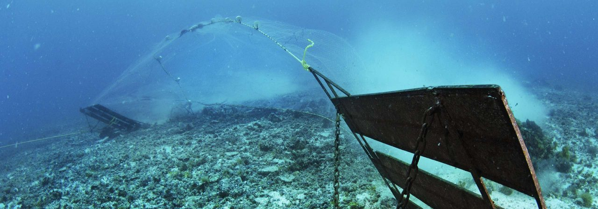
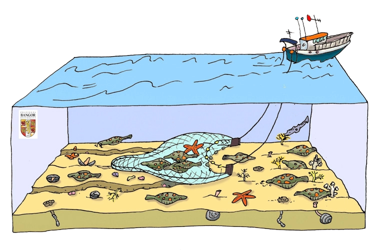
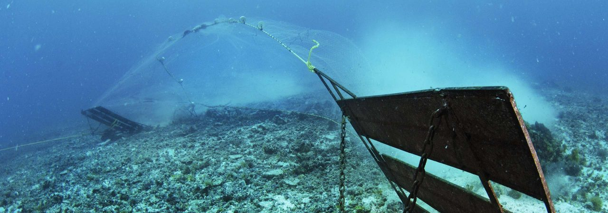
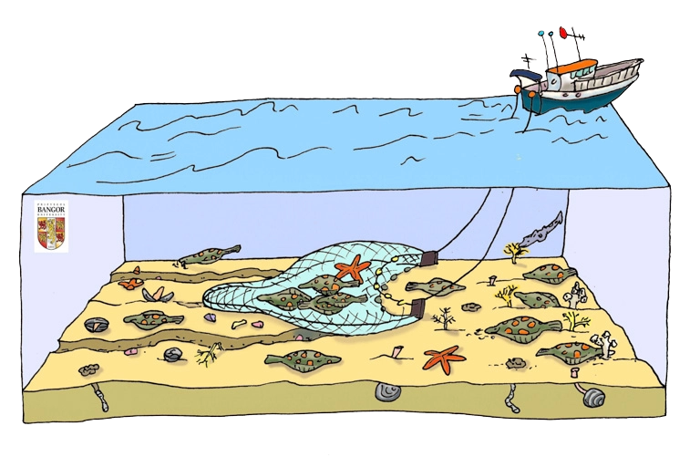
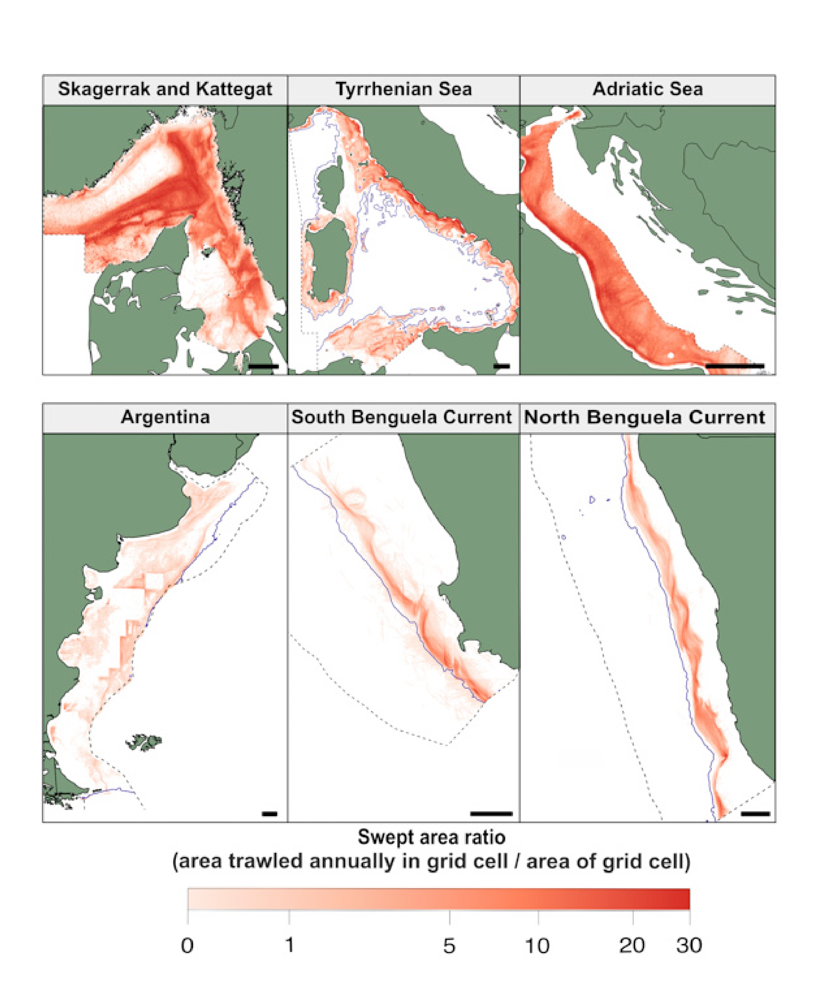

HOME
SOURCES
HOME
SOURCES
Bottom trawling includes the towing of nets of all sizes along the ocean floor. This is typically done for commercial purposes. This fishing practice is proven extremely destructive and dangerous to marine ecosystems and their biodiversity. Bottom trawling causes changes to the environment by wiping out entire deep underwater ecosystems that act as underwater rainforests. The main two parts of the environment that are affected by trawling are coral reefs and maerl beds.
90% of coral colonies perish, and up to two-thirds of sponges are damaged. Entire colonies are wiped out. Sometimes colonies of corals carbon dated to 4,000 years old have been destroyed and swept up by these nets. Fish and organisms of all kinds are picked up.
 



As the net drags along the seafloor, all creatures in its path—fish, animals, marine mammals, plants, and turtles—are scooped up along the way. The fishing vessel keeps the targeted commercial species and discards the remaining, unwanted fish and animals—virtually all of it dead or dying. “Much more biomass of fish and habitat-forming species has been removed from the deep-sea than we thought. This has altered the ecosystem in ways that we have yet to understand,” Palomares said. The chart to the left shows that the trawling footprint was as high as 80 percent in the Adriatic Sea, part of the Mediterranean. All of these areas are trawled annually meaning once a year. Where the red is shown is where they trawl which covers a huge area. All red areas also knowed less life on the sea floor. Since these areas are trawled repeatedly, there is little to no room for growth in the ecosystem.
An illustration showing bottom-trawling. A net is pulled along the ocean’s foor picking up what comes in its path. Image by Femke Van Gent, © Jan Hiddink/Bangor University.
When pulled behind a single boat, the mouth of the net is most commonly held open by two large “doors” – made of heavy wood or steel – attached to either side of the net (otter trawl). Baja California, Mexico. Photo by Brain Skerry / National Geographic
This figure shows examples of high-resolution mapping of trawling \ intensity (or the “trawl footprint”) at 1,000 meters (3,280 feet) in depth or shallower. Image courtesy of the University of Washington.
 CLICK TO LEARN ABOUT BYCATCH
CLICK TO LEARN ABOUT BYCATCH
menu